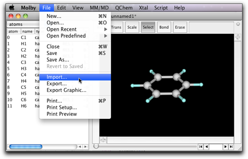
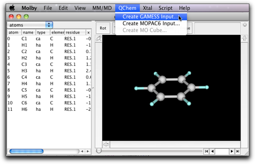
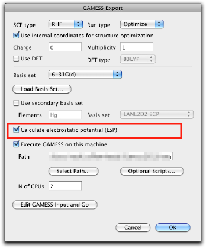

Step Nine: Collaboration with Other Quantum Chemistry Softwares
Molby has a capability to export and import files for quantum chemistry softwares, namely Gaussian and GAMESS. At present, the capability is quite limited, and in many cases it would be much better to use other established softwares. Nevertheless, if you are already familiar with Molby, you may want to use Molby for creating input files for Gaussian and GAMESS and processing outputs. Here are instructions how to do it.
Needless to say, you need to have access to Gaussian or GAMESS program packages. They can be on the same machine or on other machines (workstations) than Molby. Please learn how to use these packages before using Molby as described in this section.
1. Using Gaussian
The Gaussian input can be created by selecting "Export..." command in the "File" menu. The file extension is either "gjf" (as is the convention in GaussianW) or "com" (as in UNIX version of Gaussian).


The output will look like this. Although Molby can create only one type of Gaussian input (optimize with PM3), it should be relatively easy to modify the generated input file by hand.
%Chk=benzene.chk # PM3 Opt unnamed1; created by Molby at Sat Feb 11 00:30:21 +0900 2012 0 1 C -0.653000 0.585000 -1.068000 H -1.158000 1.039000 -1.898000 C 0.729000 0.607000 -1.003000 H 1.295000 1.076000 -1.783000 C 1.382000 0.021000 0.069000 H 2.452000 0.038000 0.119000 C 0.651000 -0.586000 1.076000 H 1.156000 -1.039000 1.906000 C -0.732000 -0.607000 1.012000 H -1.298000 -1.077000 1.792000 C -1.384000 -0.021000 -0.060000 H -2.455000 -0.038000 -0.110000
When you do geometrical optimization, you may want to examine how the structure changes as the calculation proceeds. This can be done by importing the Gaussian output file. The extention should be either ".out" or ".log".

2. Using GAMESS
Creating GAMESS input can be more complicated than Gaussian, so that Molby provides a simple dialog to help creating GAMESS input. The dialog is accessible from the "Creating GAMESS input..." command in the "QChem" menu.

You can specify various settings in the dialog.

- SCF Type: RHF, ROHF, or UHF.
- Run Type: Energy, Property, or Optimize.
- Use internal coordinates for structure optimization: Add instructions for automatic generation of internal Z-matrix. (Note: It cannot be used for linear molecules.)
- Charge: The (formal) charge of the molecule.
- Multiplicity: The spin multiplicity.
- Use DFT: Check if you want to use DFT.
- DFT type: At present only B3LYP is available in this dialog.
- Basis set: One of PM3, STO-3G, 3-21G, 6-31G, 6-31G(d), 6-31G(d, p), 6-311G, 6-311G(d, p), or LanL2DZ.
- Load Basis Set: Additional basis set can be imported from a file. The file should be in the GAMESS standard format. See the "basis_sets" directory in the "Script" directory for examples.
- Use secondary basis set: Check if you want to use another basis set for certain elements.
- Elements: The elements (comma separated) to use secondary basis set.
- Basis set: The secondary basis set.
- Calculate electrostatic potential: This is used for RESP charge calculation for AMBER.
- Include NBO instructions: When GAMESS is built with NBO (natural bond orbital) support, these checkboxes generate instructions for running NBO program for the designated properties.
- Execute GAMESS on this machine: (0.6.5 and later) Execute GAMESS, provided that GAMESS is installed on the same computer. Specify the full path of the GAMESS executable in "Path", and the number of CPU cores for calculation in "N of CPUs."
(Note: GAMESS may not work depending on the version of the executable.)
When the calculation of GAMESS is complete, you will find two output files, namely *.log and *.dat. Either format can be imported by use of the "Import..." menu command. Some informations are included in both (e.g. coordinates during structural optimization), but other informations are only in one of these files (e.g. the full description of gaussian functions is only in the *.log file, whereas the orbital coefficients with full precision are only in the *.dat file). You need to be familiar with the structure of the GAMESS output files to fully utilize the GAMESS import capability of Molby.
3. Using GAMESS for calculation of the RESP charges
We already saw how to assign partial charges for evaluation of electrostatic interactions in MM calculations. There we used semi-empirical calculations, although ab initio calculations will give better results if possible. Here are instructions how to do it using GAMESS.
Select "MM/MD" → "GAMESS/RESP...".

The following window pops up. As the first step, press the "Create GAMESS Input..." button.

The familiar GAMESS dialog opens up. It is most important to turn on the "Calculate electrostatic potential (ESP)" checkbox (it should be turned on if you follow the steps as described here, but please double-check). Also make sure that the charge and multiplicity are correct, and select a suitable basis set (6-31G(d) is recommended).

Press OK to create the GAMESS input, and send it to GAMESS. The calculation will take time, so that you can finish Molby (after saving the molecule as a msbf file!), and work on something else at this stage.
After the GAMESS calculation is complete, open the same molecule, and select "MM/MD" → "Tools" → "GAMESS/RESP..." again. This time, follow the second step by pressing the "Import GAMESS dat..." button.

Select the GAMESS dat file (which should be available when the GAMESS calculation ends successfully), and import it. When the import is complete, the "Run RESP..." button should be enabled. If it does not, the imported dat file does not have the electrostatic potential information. Start over from the step 1, and make sure that the "Calculate electrostatic potential (ESP)" checkbox is on.

Press the "Run RESP..." button, and the following dialog opens. This is almost the same as the dialog for Antechamber described before.

Press the "OK" button, and the RESP charge will be assigned to the atoms.